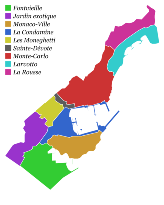

Административно-территориальное деление
В административном отношении княжество было разделено на 3 коммуны, которые, в свою очередь, разделены на 10 районов. Деление княжества на три коммуны узаконено постановлением Конституции Монако от 1911 года. Исходя из поправки в конституцию Монако от 1917 года, княжество состоит только из одной единой и неделимой коммуны, которая, в свою очередь состоит, из 10 районов.
Коммуны Монако (существовавшие в период 1911—1917 года):
• Ла-Кондамин — район вдоль порта;
• Монако — старый город, расположенный на скалистом мысе;
• Монте-Карло — самый богатый и престижный район. Главная курортная зона, здесь расположены самые богатые резиденции.